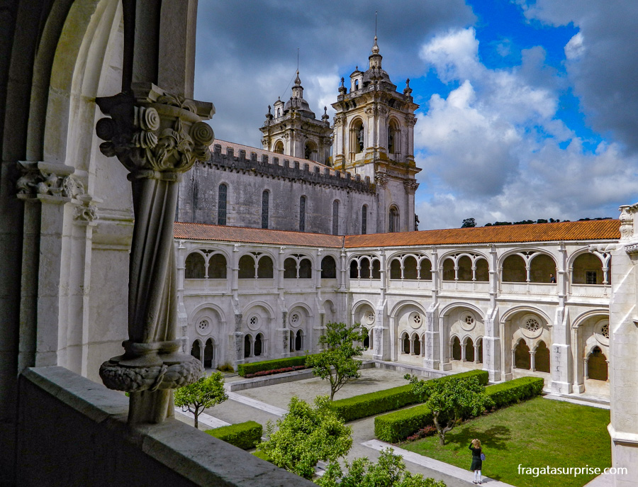
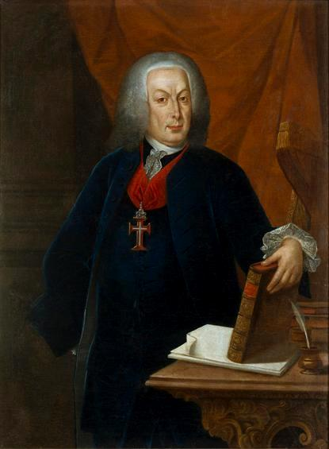
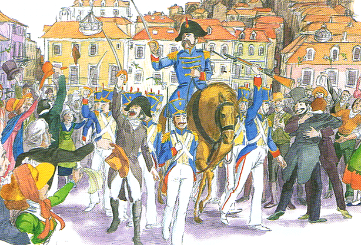
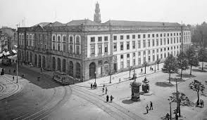
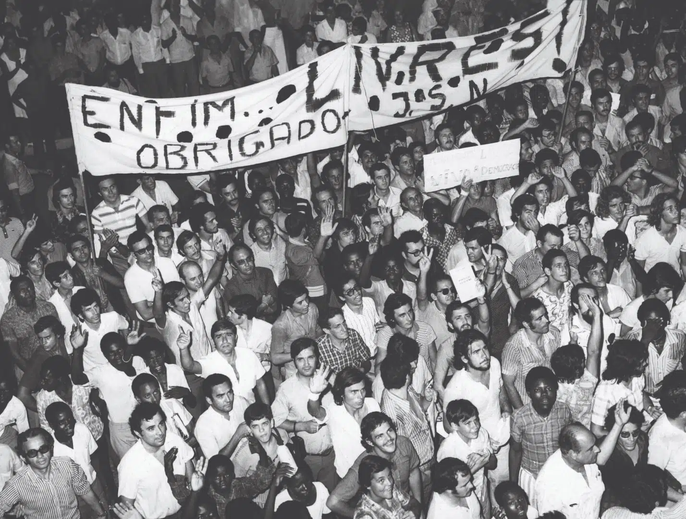

Descubra a evolução, curiosidades e informações sobre o nosso sistema educativo
Percursos da Educação Portuguesa
Origens: Ensino Monástico e Universidade de Coimbra
A história da educação em Portugal tem início com as escolas catedrais
e monásticas dos séculos XI e XII, mas o marco fundamental surge em
1290, quando D. Dinis criou o
Studium Generale (posteriormente Universidade de Coimbra),
uma das mais antigas da Europa. Esta decisão real representou
um investimento estratégico na formação de quadros nacionais, reduzindo a
dependência de universidades estrangeiras.

Mosteiros como centros de ensino
A Era Medieval e Renascentista
Durante os séculos XIV e XV, a educação portuguesa manteve-se essencialmente clerical.
Os mosteiros de Alcobaça, Batalha e Santa Cruz de Coimbra
foram centros importantes de preservação e transmissão do conhecimento. O Mosteiro de Santa Cruz, em particular,
possuía uma das mais ricas bibliotecas medievais da Península Ibérica.
A expansão marítima dos séculos XV e XVI trouxe novos desafios educativos. A formação de navegadores,
cartógrafos e administradores coloniais exigiu o desenvolvimento de conhecimentos técnicos
específicos. A Escola de Sagres, embora rodeada de alguma mitologia, representou efetivamente um centro de
concentração de conhecimento náutico.
Carta Naútica de África
Período Pombalino (1759-1777)
Durante o século XVIII, o Marquês de Pombal promoveu a mais profunda reforma
educativa da história portuguesa. Em 1759, expulsou os Jesuítas, que controlavam grande parte
do ensino, e criou as Aulas Régias - um sistema de ensino público financiado
pelo Estado através do "Subsídio Literário", primeiro imposto específico para a educação.
Criação de escolas primárias em todas as vilas
Estabelecimento do Colégio dos Nobres (1761)
Reforma da Universidade de Coimbra (1772)
Introdução do ensino de ciências experimentais
Criação da Impressão Régia (1768)

Retrato do Marquês de Pombal
O Século XIX: Liberalismo e Democratização
A Revolução Liberal de 1820 trouxe novos ideais educativos. A Constituição
de 1822 estabeleceu pela primeira vez o direito à educação, declarando que "a instrução
primária é gratuita a todos os cidadãos".
1835: Reforma de Passos Manuel cria liceus
1844: Fundação da Escola Politécnica de Lisboa
1878: Criação das Escolas Normais para formação de professores
1884: Lei da Instrução Primária torna obrigatório o ensino dos 6 aos 12 anos

Revolução Liberal de 1820
A República e a Democratização (1910-1926)
A Primeira República trouxe um impulso significativo à educação. O Ministro da
Instrução Pública, António José de Almeida, lançou um ambicioso
programa de alfabetização nacional.
Criação das Universidades de Lisboa e Porto (1911)
Separação do ensino religioso do oficial
Expansão do ensino técnico
Campanha nacional contra o analfabetismo

Universidade do Porto em 1911
Estado Novo
O regime de Salazar implementou uma política educativa restritiva, baseada nos princípios
"Deus, Pátria e Família". O ensino primário foi limitado a quatro anos, e apenas uma elite tinha
acesso ao ensino superior.
Livro único obrigatório
Separação de género no ensino
Ensino técnico desvalorizado
Controlo ideológico dos conteúdos
Taxa de analfabetismo mantida elevada propositadamente
Ambiente escolar durante o Estado Novo
Pós-25 de Abril
Após a Revolução de 1974, transformou radicalmente o sistema educativo português.
A Constituição de 1976 consagrou o direito à educação como direito fundamental.
1976: Criação de novas universidades (Aveiro, Minho, ISCTE)
Escolaridade obrigatória de 9 anos
Ensino básico gratuito
Integração de alunos com necessidades especiais
1991: Criação do ensino superior politécnico
2009: Escolaridade obrigatória alargada para 12 anos

Comissão Comemorativa
10 Universidades Mais Antigas de Portugal
Universidade de Coimbra (1290)
Universidade de Évora (1559)
Universidade de Lisboa (1911)
Universidade do Porto (1911)
Universidade Técnica de Lisboa (1930)
Universidade Nova de Lisboa (1973)
Universidade de Aveiro (1973)
Universidade do Minho (1973)
ISCTE (1972)
Universidade dos Açores (1976)
Sistema Atual
O sistema educativo atual abrange ensino pré-escolar ao superior, com foco na equidade e inclusão.